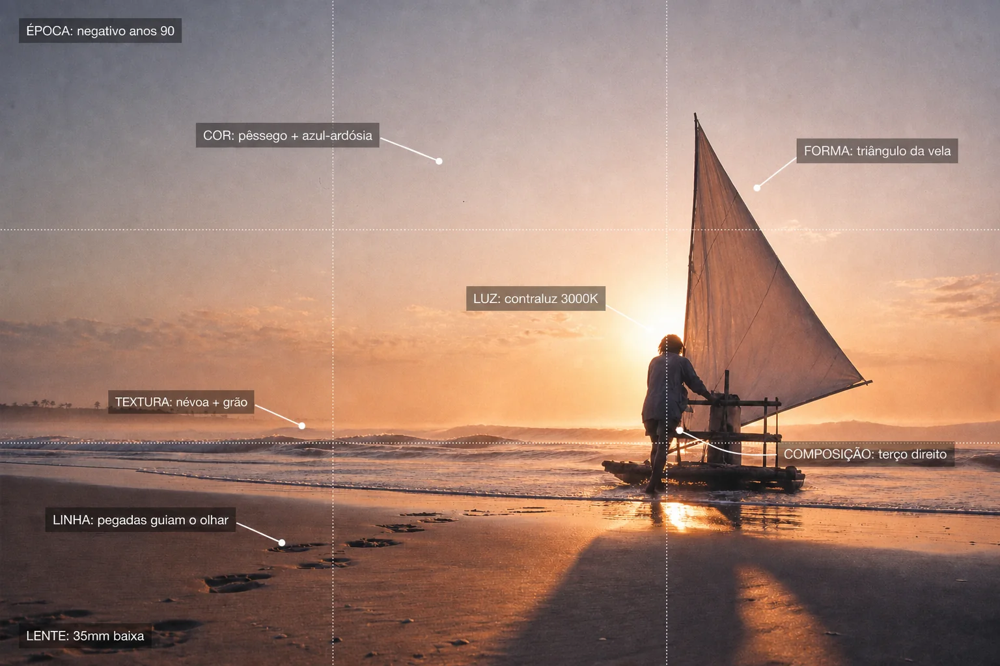
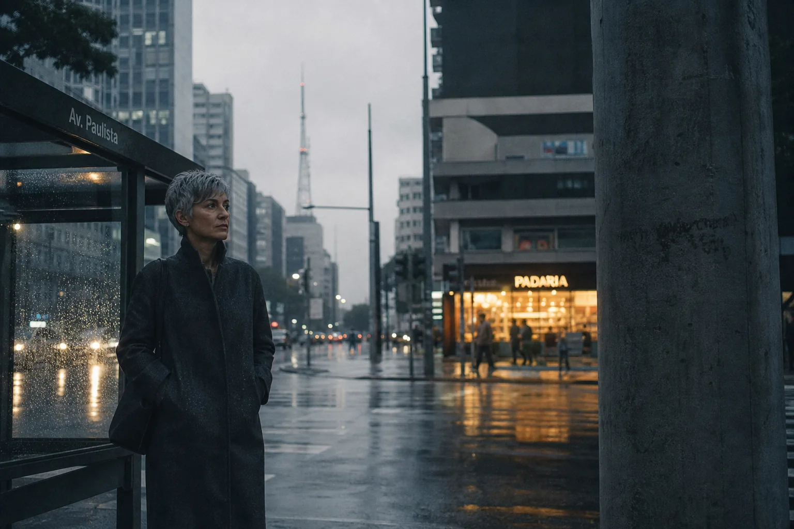
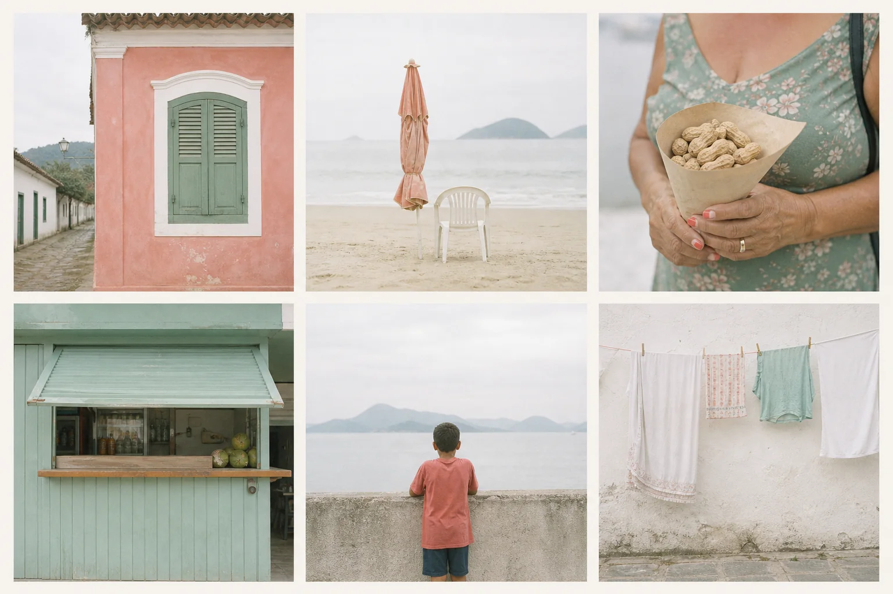
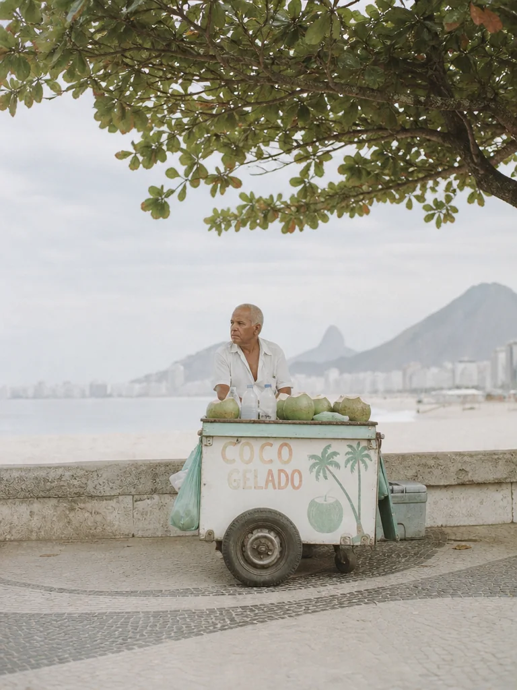
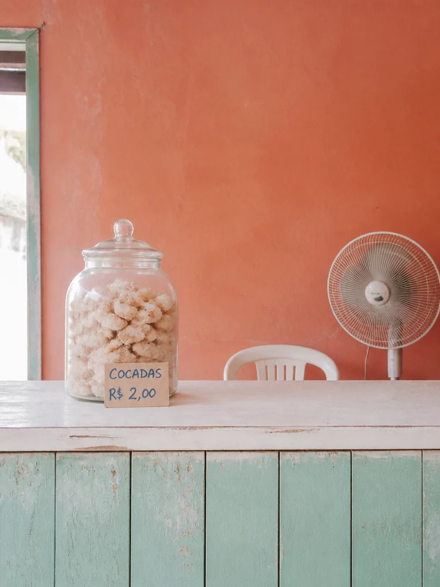
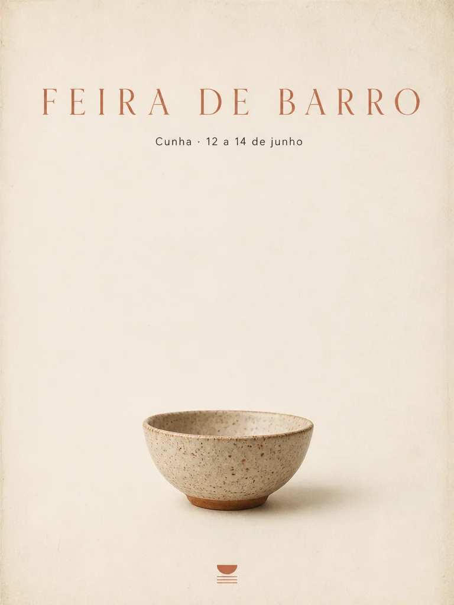
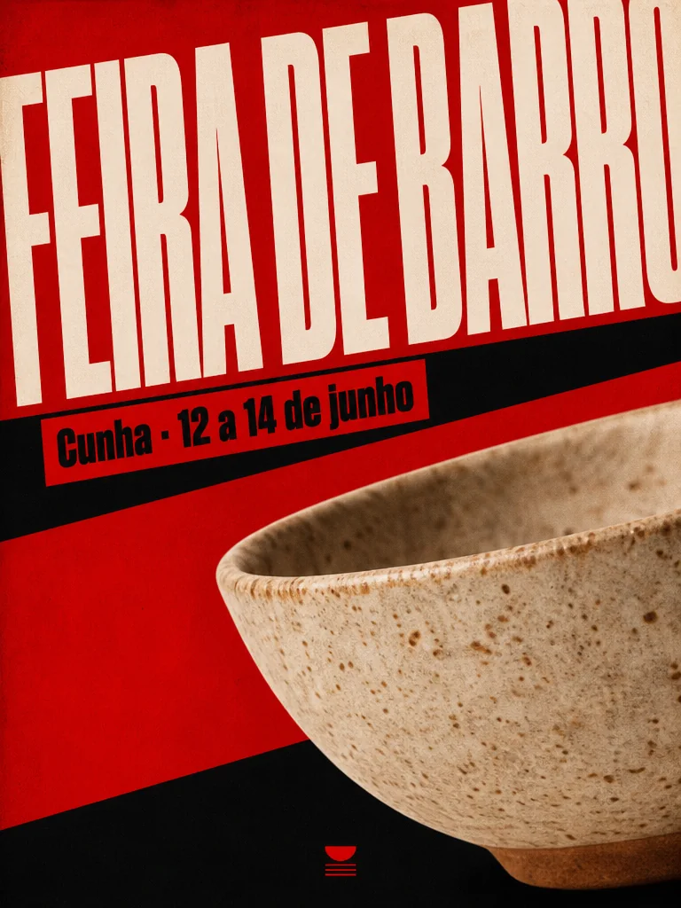

No módulo anterior você descobriu que gosto é feito de decisões. Mas decisão que não tem nome não entra no prompt, não entra no briefing e não se defende na frente de um cliente. Este módulo é o dicionário: você aprende a olhar uma imagem e dizer, camada por camada, o que ela está fazendo — e depois a condensar um conjunto inteiro de referências num documento curto, o Visual DNA, que vira prompt.
Prompt usado
Wide shot of a young Brazilian fisherwoman in her 30s with dark-brown skin and short braids, wearing an oversized faded blue work shirt, pushing a small wooden jangada fishing raft with a white triangular sail into the sea at dawn on a beach in Ceará. Backlight: the sun just above the horizon behind her, around 3000K, rim light on her shoulders and the sail edge, long shadows toward the camera, light mist over the water. Palette of peach, pale gold and slate blue. Subject small on the right third, horizon on the lower third, the sail forming a strong triangle, footprints in wet sand leading in from the bottom left corner. Shot on a 35mm lens at f/5.6 from low height near the sand. Fine grain, slightly faded shadows like 1990s color negative film. Mood: quiet determination at the start of the day.

Instrução de edição usada (sobre a imagem-base)
Keep this exact photograph untouched and overlay a clean, minimal analysis diagram on top of it, like an art director's notes: thin white lines with small circular endpoints pointing to parts of the image, each ending in a short label in Portuguese in a clean sans-serif font, white text on small semi-transparent dark rectangles. Labels exactly: 'LUZ: contraluz 3000K' pointing to the sun; 'COR: pêssego + azul-ardósia' pointing to the sky; 'COMPOSIÇÃO: terço direito' pointing to the woman; 'LINHA: pegadas guiam o olhar' pointing to the footprints; 'FORMA: triângulo da vela' pointing to the sail; 'TEXTURA: névoa + grão' pointing to the mist on the water; 'LENTE: 35mm baixa' in the lower left corner; 'ÉPOCA: negativo anos 90' in the upper left corner. Also draw thin dotted white rule-of-thirds grid lines. Spell every label exactly as written, in correct Portuguese, letter by letter (for example 'baixa' is b-a-i-x-a). Do not change the photo itself.
À direita, a mesma foto com as anotações de quem sabe ler imagem: de onde vem a luz e em que temperatura, quais cores mandam, onde está o sujeito, que linha guia o olho, que forma organiza o quadro, qual textura dá o clima, que lente e que época ela evoca. A anotada é uma edição da original pedindo só a sobreposição. Ao fim do módulo, você fará isso sozinho com qualquer referência.
1Desmontar uma imagem em sete camadas
O que é
Toda imagem — foto, frame de filme, ilustração, anúncio — é feita das mesmas camadas. Olhar como diretor é passar por elas uma de cada vez, sempre na mesma ordem, até que isso fique automático. A ordem abaixo vai do que mais pesa (luz) ao que resume tudo (emoção):
As sete camadas de leitura
| Camada | Pergunta | Na foto da pescadora |
|---|---|---|
| Luz | Qual a fonte, a direção, a dureza e a temperatura? | sol baixo atrás dela (contraluz), ~3000K, recorte nos ombros e na vela |
| Cor | Quais 3–4 cores mandam? Quente ou fria? Saturada ou contida? | pêssego, dourado pálido, azul-ardósia; saturação contida |
| Composição | Onde está o sujeito? Que linhas e formas organizam o quadro? | sujeito pequeno no terço direito; pegadas em diagonal; triângulo da vela |
| Textura | O que a superfície da imagem transmite: fosco, brilho, grão, névoa? | névoa sobre a água, areia molhada, grão fino |
| Lente | Grande-angular ou tele? Altura da câmera? Fundo nítido ou desfocado? | 35 mm, câmera baixa perto da areia, tudo razoavelmente nítido |
| Época | Que tempo ou suporte ela evoca: filme, digital, anos 70, 90? | negativo colorido dos anos 90, sombras levemente desbotadas |
| Emoção | O que sobra quando você fecha os olhos? | determinação calma, começo de dia, solidão sem tristeza |
Por que aprender
Separar as camadas transforma impressão em informação. “Essa foto é linda” não te ajuda a fazer outra; “contraluz baixa a 3000K, paleta pêssego e ardósia, sujeito pequeno num terço, grão de negativo dos anos 90” é praticamente um prompt pronto. É também assim que você descobre o que está fazendo o trabalho: tire mentalmente uma camada de cada vez e veja qual faria a imagem desabar.
Conceitos-chave em ação
Instrução de edição usada (sobre a imagem-base)
Keep this exact photograph untouched and overlay a clean, minimal analysis diagram on top of it, like an art director's notes: thin white lines with small circular endpoints pointing to parts of the image, each ending in a short label in Portuguese in a clean sans-serif font, white text on small semi-transparent dark rectangles. Labels exactly: 'LUZ: contraluz 3000K' pointing to the sun; 'COR: pêssego + azul-ardósia' pointing to the sky; 'COMPOSIÇÃO: terço direito' pointing to the woman; 'LINHA: pegadas guiam o olhar' pointing to the footprints; 'FORMA: triângulo da vela' pointing to the sail; 'TEXTURA: névoa + grão' pointing to the mist on the water; 'LENTE: 35mm baixa' in the lower left corner; 'ÉPOCA: negativo anos 90' in the upper left corner. Also draw thin dotted white rule-of-thirds grid lines. Spell every label exactly as written, in correct Portuguese, letter by letter (for example 'baixa' is b-a-i-x-a). Do not change the photo itself.
A leitura anotada em detalhe. Repare que duas camadas não estão “em lugar nenhum”: época e lente ficam nos cantos, porque são propriedades da imagem inteira, não de um ponto dela. Nas suas anotações, faça o mesmo.
2Precisão vence adjetivo
O que é
Palavras como cinematic, moody, aesthetic ou beautiful soam como direção, mas não decidem nada: cada uma cabe em mil imagens diferentes. Uma palavra visual útil é aquela que uma pessoa conseguiria executar — um iluminador saberia onde pôr a luz, um colorista saberia que curva aplicar.
Por que aprender
Veja a mesma ideia — uma mulher na rua — pedida de duas formas. São duas gerações independentes (não uma edição da outra), porque aqui o ponto é justamente o prompt inteiro:
Conceitos-chave em ação
Prompt usado
woman on the street, cinematic lighting

Prompt usado
Woman in her 40s with short grey hair and a long charcoal coat waiting at a bus stop on a drizzly avenue in downtown São Paulo, early evening. Muted blue-gray palette with a single warm accent from a bakery window behind her, matte textures, soft haze from the drizzle, wet asphalt with blurred reflections. Asymmetrical composition: she stands on the left third, a concrete column cuts the right side, lots of grey sky above. 35mm lens at f/2.8, eye level. Gritty editorial mood, fine grain, restrained contrast.
À esquerda, o prompt vago rendeu uma imagem bonita — moça de franja e jaqueta de couro, rua noturna molhada, bokeh de faróis —, mas genérica: quem ela é, que rua é, que luz é “de cinema” e onde ela fica no quadro foram decisões do modelo, não suas. É o “cinematográfico” médio que ele entrega a qualquer um. À direita, cada uma dessas coisas foi pedida: centro de São Paulo com garoa, paleta azul-acinzentada com um único acento quente de padaria, texturas foscas, névoa, composição assimétrica com uma coluna cortando o quadro, 35 mm. Abra os dois “Prompt usado” e conte as decisões.
✓ Troque por…
- low-key, single hard light from the right, deep shadows
- muted blue-gray palette with one warm accent
- soft overcast daylight, no hard shadows
- faded 1990s color negative, fine grain
✗ Em vez de…
- dramatic lighting
- moody colors
- nice light
- vintage vibe
3A biblioteca de palavras visuais
O que é
A biblioteca de palavras visuais é uma seção do seu caderno de olhar. Cada entrada tem quatro partes: a camada, o termo em português, o termo em inglês (é como vai no prompt) e o efeito na imagem em poucas palavras. Comece pela tabela abaixo e acrescente três termos por dia, vindos das suas leituras de referências.
Biblioteca de partida
| Camada | Termo | No prompt (inglês) | Efeito na imagem |
|---|---|---|---|
| Luz | luz rasante | raking light | luz quase paralela à superfície; revela textura e relevo |
| Luz | contraluz / recorte | backlight, rim light | contorno brilhante, silhueta, atmosfera |
| Luz | luz de janela suave | soft window light | sombras graduais, pele bonita, intimidade |
| Luz | luz dura de fonte única | single hard light source | sombra de borda nítida, drama, tensão |
| Luz | clave baixa / clave alta | low-key / high-key | imagem dominada por sombra / por claros |
| Luz | hora dourada / hora azul | golden hour / blue hour | quente e baixa / fria e crepuscular |
| Luz | céu nublado difuso | overcast diffused daylight | sem sombras duras, cores calmas |
| Cor | paleta contida | restrained / muted palette | poucas cores, pouca saturação; soa adulto e caro |
| Cor | acento único | single warm accent | um ponto de cor que guia o olho |
| Cor | complementares | teal and orange | contraste quente × frio de cinema |
| Cor | monocromático | monochromatic sage palette | uma cor em vários tons; unidade |
| Cor | tons terrosos | earthy tones: terracotta, ochre | artesanal, acolhedor, orgânico |
| Cor | pastel | pastel peach and lilac | delicadeza, nostalgia, suavidade |
| Composição | regra dos terços | subject on the left third | equilíbrio dinâmico, espaço para respirar |
| Composição | espaço negativo | generous negative space | calma, destaque, lugar para texto |
| Composição | linhas-guia | leading lines | conduzem o olho até o sujeito |
| Composição | moldura natural | framed by a doorway | profundidade e foco |
| Composição | simetria frontal | symmetrical frontal composition | ordem, estabilidade, formalidade |
| Composição | primeiro plano desfocado | blurred foreground element | sensação de espiar, camadas |
| Textura | fosco | matte textures | discreto, tátil, sem brilho plástico |
| Textura | brilhante / cromado | glossy, chrome reflections | tecnologia, luxo, modernidade |
| Textura | grão de filme | 35mm film grain | humano, analógico, autêntico |
| Textura | névoa / neblina | soft haze, atmospheric mist | profundidade, mistério, suavidade |
| Textura | halação | halation around highlights | brilho avermelhado em torno das luzes, cara de película |
| Lente | grande-angular | 24mm wide-angle | muito espaço, presença, linhas esticadas |
| Lente | tele / compressão | 135mm telephoto compression | fundo colado e desfocado, sujeito isolado |
| Lente | pouca profundidade de campo | shallow depth of field, f/1.8 | fundo em borrão, foco num ponto |
| Lente | câmera baixa | low camera near the ground | sujeito imponente, chão como primeiro plano |
| Época | negativo colorido anos 90 | 1990s color negative film | cores desbotadas, memória recente |
| Época | slide anos 70 | 1970s Kodachrome-like slide film | vermelhos e amarelos intensos, nostalgia |
| Época | flash de câmera descartável | direct on-camera flash snapshot | espontâneo, festa, anos 2000 |
| Emoção | dignidade calma | calm and dignified mood | respeito pelo sujeito, sem pose |
| Emoção | tensão urbana | gritty tense urban mood | energia, desconforto, realismo |
Por que aprender
Os modelos de imagem foram treinados com milhões de fotos legendadas por fotógrafos, editores e bancos de imagem — em inglês, na maior parte. Termos de set e de laboratório (raking light, halation, low-key) têm um significado estável nessas legendas, por isso funcionam como atalhos precisos. Seu glossário em português serve para pensar e conversar com o cliente; o termo em inglês serve para pedir ao modelo.
Conceitos-chave em ação
Como crescer a biblioteca (3 termos por dia)
- Leia uma referência pelas sete camadas.
- Para a camada que mais pesa nela, procure o termo técnico (livros de fotografia, glossários de cinema, legendas de bancos de imagem).
- Teste o termo: gere uma imagem simples com ele e outra sem ele. Se não mudou nada visível, ele não entra.
- Registre camada, termo PT, termo EN e o efeito que você viu, não o que leu.
4Visual DNA: o que se repete num conjunto de referências
O que é
Enquanto a leitura em sete camadas desmonta uma imagem, o Visual DNA procura o que é comum a várias. Observe a folha de referências abaixo. Os assuntos variam — uma fachada, uma cadeira de praia, mãos com amendoim, um quiosque, um menino, um varal — mas alguma coisa faz todas parecerem da mesma família:

Prompt usado
A reference moodboard sheet with six separate photographs arranged in a 3-column by 2-row grid with thin off-white gutters, on an off-white background, no text. All six share one hidden visual DNA: soft overcast daylight or open shade, no hard shadows; a restrained palette of sea-glass green, faded coral, sand and chalk white; slightly overexposed airy highlights; flat frontal compositions with generous empty space; everyday objects of a Brazilian beach town treated with calm and dignity; faded 1990s point-and-shoot color film with fine grain. Photos: 1) a pastel coral house facade with a closed green wooden window in Paraty; 2) a plastic chair and a folded beach umbrella on empty sand; 3) a woman's hands holding a paper cone of boiled peanuts; 4) a sea-green kiosk shutter half open; 5) a boy in a faded coral t-shirt looking at the sea from a concrete wall, seen from behind; 6) laundry drying on a line against a chalk-white wall.
Seis referências de uma cidade de praia brasileira geradas com um DNA em comum (o prompt conta qual é). Antes de abrir o “Prompt usado”, tente descrever o DNA pelas sete camadas. Depois confira.
Por que aprender
Um board de 30 imagens não cabe num prompt; um DNA de oito linhas cabe. Ele também resolve um problema comum de quem trabalha com clientes: consistência não vem de fazer mais posts, vem de decidir o sistema antes. Com o DNA escrito, a centésima imagem da série segue as mesmas regras da primeira.
O que um Visual DNA contém
| Campo | O que registrar | Exemplo (folha acima) |
|---|---|---|
| Paleta | 3–5 cores com papéis | verde-água, coral desbotado, areia, branco-giz |
| Luz | tipo, direção, dureza | dia nublado ou sombra aberta, sem sombra dura |
| Texturas | superfície e acabamento | altas luzes levemente estouradas, grão fino |
| Composição | hábitos de quadro | frontal e plana, muito espaço vazio |
| Clima | 2–3 palavras de emoção | calma, cotidiano digno, verão fora de temporada |
| Época/suporte | referência de tempo | câmera compacta de filme dos anos 90 |
| Palavras-chave | 5–7 termos para prompt | overcast, sea-glass green, faded coral, airy, frontal, 1990s point-and-shoot |
| Lista do NÃO | o que quebra o estilo | cores tropicais saturadas, pôr do sol, HDR, brilho, ângulos dramáticos |
Conceitos-chave em ação
5Extrair o DNA com um assistente de IA
O que é
Os assistentes de IA atuais aceitam imagens anexadas e sabem descrevê-las em linguagem técnica. Isso faz deles um bom segundo olhar: você sobe de 6 a 20 referências (ou uma captura de tela do board inteiro) e pede a leitura estruturada. O prompt abaixo funciona em qualquer um deles:
Extrator de Visual DNA
Objetivo: Transformar um conjunto de referências anexadas num DNA visual com palavras-chave, lista do NÃO e prompts prontos.
You are an experienced art director. I am attaching <N> reference images that I chose because they share a visual language I want to own. 1. Analyze them together, not one by one. Find only what REPEATS in at least two thirds of them. 2. Return my VISUAL DNA in this exact structure: - Palette: 3-5 colors with approximate HEX and the role of each (base, accent, support) - Light: source, direction, quality (hard/soft), approximate color temperature in K - Textures and finish - Composition habits (subject placement, negative space, camera height, lens feel) - Era / medium it evokes - Mood: 3 words - 7 prompt keywords in English - NO list: 6 things that would break this style 3. Point out 1-2 references that do NOT fit the DNA and explain why. 4. Write a reusable STYLE BLOCK (one paragraph in English, no subject) that I can append to image prompts. 5. Write 3 complete image prompts with different subjects from <meu tema>, each ending with the STYLE BLOCK. Be concrete: use observable visual terms, never words like beautiful, stunning, aesthetic or cinematic without explaining what they mean.
Como verificar: O DNA descreve o que você vê nas imagens, ou inventou coisas que não estão lá? As referências apontadas como “fora do DNA” são mesmo as mais diferentes? Corte qualquer palavra-chave que você não consiga apontar em pelo menos quatro imagens.
Por que aprender
O assistente é rápido, mas não tem o seu gosto: ele descreve o que é frequente, não o que é importante para você. Trate a resposta como um rascunho de estagiário muito atento — revise, corte, reescreva com as suas palavras. O documento final é seu.
Exemplo de DNA revisado (a folha de praia)
PALETTE: sea-glass green #9CC7B4 (accent), faded coral #E8A08A (accent), sand #E9DCC4 (base), chalk white #F5F2EA (base) LIGHT: overcast daylight or open shade, soft, no hard shadows, ~6000K TEXTURES: slightly overexposed airy highlights, fine film grain, matte painted walls COMPOSITION: flat frontal framing, subject small, generous empty space, eye-level ERA: 1990s point-and-shoot color film MOOD: calm, everyday, dignified KEYWORDS: overcast, sea-glass green, faded coral, airy highlights, frontal, negative space, point-and-shoot film NO LIST: saturated tropical colors, sunsets, HDR, glossy surfaces, dramatic angles, posed smiles STYLE BLOCK: soft overcast daylight or open shade, no hard shadows; restrained palette of sea-glass green, faded coral, sand and chalk white; slightly overexposed airy highlights; flat frontal composition with generous empty space around the subject; everyday life treated with calm and dignity; faded 1990s point-and-shoot color film, fine grain.
Conceitos-chave em ação
O teste do DNA é gerar assuntos que não estavam nas referências usando só o bloco de estilo e a lista do NÃO. Se as imagens novas parecerem da mesma família da folha, o DNA está bem escrito:

Prompt usado
Vertical photo of an elderly man selling coconut water from a small cart under a tree in a Brazilian beach town, looking off to the side. VISUAL DNA: soft overcast daylight or open shade, no hard shadows; restrained palette of sea-glass green, faded coral, sand and chalk white; slightly overexposed airy highlights; flat frontal composition with generous empty space around the subject; everyday life treated with calm and dignity; faded 1990s point-and-shoot color film, fine grain. Avoid: saturated tropical colors, sunsets, HDR, glossy surfaces, dramatic angles.

Prompt usado
Vertical photo of a small grocery counter in a Brazilian beach town: a glass jar of cocadas, a hand-written price tag, a fan, a faded coral wall. VISUAL DNA: soft overcast daylight or open shade, no hard shadows; restrained palette of sea-glass green, faded coral, sand and chalk white; slightly overexposed airy highlights; flat frontal composition with generous empty space around the subject; everyday life treated with calm and dignity; faded 1990s point-and-shoot color film, fine grain. Avoid: saturated tropical colors, sunsets, HDR, glossy surfaces, dramatic angles. The price tag is the only text: no signs or posters on the wall, unbranded plain fan, no logos.
Duas gerações independentes com assuntos que não existiam na folha de referências — um senhor com o carrinho de água de coco e um balcão de mercearia com pote de cocadas — e o mesmo bloco de estilo mais a lista do NÃO (“Avoid: …”). Compare com a folha: a luz sem sombra dura, a paleta verde-água e coral e o enquadramento frontal com vazio vieram do DNA, não das referências em si.
6Meaning Map: cada elemento carrega uma mensagem
O que é
Uma imagem não só “fica bonita”: ela dispara associações — confiança, pressa, luxo, acolhimento — e essas associações decidem, em segundos, se alguém confia, compra ou passa reto. O Meaning Map (mapa de significados) é a ferramenta que torna isso explícito, sempre no mesmo formato:
Por que aprender
Cor é o elemento com mais carga de significado — e o mais mal usado. O erro clássico é a “marca arco-íris”: cada peça com uma cor diferente. O antídoto é pensar em papéis de cor: neutros de base (fundo, respiro), um acento principal (a assinatura, o foco), um acento de apoio usado raramente e, se houver interface, cores de status. O significado de cada cor depende do contexto, mas a tabela abaixo dá o ponto de partida:
Famílias de cor → meta-mensagem → emoção
| Cor | Meta-mensagem | Emoção | Cuidado |
|---|---|---|---|
| Azul | confiança, estabilidade, competência | segurança calma | funciona melhor com bastante espaço branco |
| Vermelho | urgência, poder, ação | energia, intensidade | use como acento; em excesso fica agressivo |
| Verde | crescimento, equilíbrio, saúde | alívio, calma | em excesso vira “bem-estar genérico” |
| Amarelo | otimismo, atenção, calor | alegria, curiosidade | grandes áreas reduzem a sensação de premium |
| Laranja | impulso, simpatia, ousadia | confiança animada | contido, senão parece barato |
| Roxo | criatividade, mistério, imaginação | intriga, aspiração | combine com neutros para ficar nítido |
| Rosa | leveza, brincadeira, personalidade | calor, diversão | muda muito com o tom: de sofisticado a infantil |
| Preto e branco | autoridade, clareza, contenção | controle, confiança | melhor base para premium; hierarquia pelo contraste |
| Marrom e bege | ofício, herança, qualidade | conforto, confiança calorosa | precisa de tipografia firme para parecer atual |
| Azul-petróleo / ciano | inovação com calma, ateliê moderno | frescor, curiosidade | evite versões neon |
| Cinza | neutralidade, foco, maturidade | estabilidade | sem um toque quente, fica frio |
Conceitos-chave em ação
Forma, composição e tipografia → meta-mensagem
| Elemento | Função | Meta-mensagem | Emoção |
|---|---|---|---|
| Ângulos agudos, triângulos | direção, ênfase | precisão, velocidade, autoridade | impulso, intensidade |
| Cantos arredondados, círculos | suavidade, acesso | segurança, simpatia | conforto |
| Grades, retângulos | ordem, estrutura | confiabilidade, disciplina | controle calmo |
| Formas orgânicas, fluidas | movimento humano | emoção, criatividade | calor, curiosidade |
| Simetria | ordem | confiabilidade | segurança |
| Assimetria | energia | ousadia | curiosidade |
| Um herói claro no quadro | compreensão | liderança | decisão |
| Escala enorme (tipo ou imagem) | atenção imediata | autoridade | impacto |
| Serifada editorial | tom, refinamento | tradição, premium | respeito |
| Sem serifa limpa | legibilidade | clareza moderna | confiança |
| Condensada, caixa alta | densidade, comando | urgência, impacto | intensidade |
| Espaçamento largo entre letras | ar | luxo contido | calma confiante |

Prompt usado
Vertical poster design for a fictional ceramics fair. Large off-white background with wide margins, a single photograph of one handmade speckled clay bowl placed small in the lower center with lots of negative space around it. Typography: the title 'FEIRA DE BARRO' in an elegant light serif font with wide letter spacing at the top, a small line below in clean sans-serif reading 'Cunha · 12 a 14 de junho'. Palette: off-white, warm beige, one terracotta accent. Soft diffused light on the bowl, subtle paper texture. Calm, premium, crafted feeling.

Instrução de edição usada (sobre a imagem-base)
Keep the same event, same text content and the same bowl photograph, but change ONLY the color roles, typography and layout scale to communicate urgency: title 'FEIRA DE BARRO' in huge bold condensed sans-serif ALL CAPS filling the full width, the line 'Cunha · 12 a 14 de junho' in bold on a solid red block, background becomes saturated red and black with high contrast, the bowl enlarged and cropped at the edge of the frame, diagonal composition, tight margins.
O mesmo cartaz de uma feira de cerâmica fictícia — mesma tigela, mesmo texto. A versão urgente é uma edição da calma que trocou só os papéis de cor, a tipografia e a escala — o título ficou tão grande que sangra pela borda direita, e a tigela, ampliada, é cortada pelo canto. Leia com o Meaning Map: margens largas + serifa leve + bege → cuidado artesanal → calma; vermelho e preto + condensada gigante + corte diagonal → urgência → intensidade. Nenhuma está errada; cada uma serve a um objetivo.
7A lista do NÃO e o teste de consistência
O que é
Todo DNA tem um lado B: a lista do NÃO (ou lista antiestilo). São as escolhas que, se aparecerem, fazem a imagem sair da família — mesmo que fiquem bonitas. Ela é curta (5 a 8 itens) e concreta, escrita com o mesmo vocabulário da biblioteca.
Por que aprender
Os geradores têm gostos próprios fortes — pôr do sol, saturação alta, pele lisa, fundo desfocado. Sem uma lista do NÃO, esses vícios vão entrando aos poucos na sua série. Veja o que acontece quando a gente quebra de propósito cada item da lista do DNA de praia, mantendo o mesmo assunto:
Prompt usado
Vertical photo of an elderly man selling coconut water from a small cart under a tree in a Brazilian beach town, looking off to the side. VISUAL DNA: soft overcast daylight or open shade, no hard shadows; restrained palette of sea-glass green, faded coral, sand and chalk white; slightly overexposed airy highlights; flat frontal composition with generous empty space around the subject; everyday life treated with calm and dignity; faded 1990s point-and-shoot color film, fine grain. Avoid: saturated tropical colors, sunsets, HDR, glossy surfaces, dramatic angles.
Instrução de edição usada (sobre a imagem-base)
Break the visual DNA on purpose, changing only the style: turn it into a hyper-saturated tropical postcard look — blazing orange sunset sky, hard direct sun with deep shadows, oversaturated turquoise and magenta, glossy HDR sharpening, dramatic low wide angle with the sky filling the frame. Keep the same elderly man, the same coconut cart and the same tree.
A da direita é uma edição da da esquerda pedindo exatamente o que a lista do NÃO proíbe: pôr do sol laranja, sol duro com sombras fundas, turquesa e magenta saturados, nitidez de HDR, ângulo baixo dramático. O senhor, o carrinho e a árvore continuam lá — mas a imagem deixou de pertencer à série.
Conceitos-chave em ação
Teste de consistência (use em toda imagem nova)
- Paleta: as cores dominantes estão entre as do DNA? Há alguma cor sem papel?
- Luz: o tipo, a direção e a dureza batem com o DNA?
- Quadro: o hábito de composição foi mantido?
- Lista do NÃO: algum item proibido entrou?
- Família: colocada ao lado de três imagens da série, ela parece parente ou visita?
Prática guiada: o DNA do seu board, testado em imagens novas
Pegue o board que você montou no módulo 1-1. Nesta prática você vai ler uma referência pelas sete camadas, extrair o DNA do board com um assistente, revisar, e provar que o DNA funciona gerando duas imagens com assuntos que não estavam no board.
Roteiro
- Escolha a referência mais forte do board e anote as sete camadas em cima dela (tabela do primeiro tópico).
- Selecione de 8 a 20 referências do board que você considera o coração do estilo.
- Rode o Extrator de Visual DNA (tópico 5) num assistente com visão, anexando as imagens.
- Revise a resposta: corte palavras-chave que você não consegue apontar em quatro imagens; ajuste a lista do NÃO.
- Gere duas imagens com assuntos novos usando o prompt abaixo.
- Aplique o teste de consistência às duas. Se uma falhar, reforce só a linha do DNA que escapou.
Prompt de teste do DNA
Objetivo: Gerar uma imagem nova guiada apenas pelo seu DNA revisado.
<Formato: vertical / horizontal> photo of <assunto novo que NÃO aparece nas referências: quem ou o quê, fazendo o quê, onde>. VISUAL DNA: <cole aqui o STYLE BLOCK revisado>. Avoid: <cole aqui a lista do NÃO, separada por vírgulas>.
Como verificar: Ao lado de três referências do board, a imagem nova parece da mesma família? Passe o teste de consistência de cinco perguntas e anote qual camada foi a mais difícil de segurar.
Exemplo pronto (DNA de praia deste módulo)
Objetivo: Ver o DNA funcionando num terceiro assunto antes de testar o seu.
Vertical photo of a lifeguard's wooden chair and a rolled red-and-white flag on an empty beach in the morning, a single seagull on the sand. VISUAL DNA: soft overcast daylight or open shade, no hard shadows; restrained palette of sea-glass green, faded coral, sand and chalk white; slightly overexposed airy highlights; flat frontal composition with generous empty space around the subject; everyday life treated with calm and dignity; faded 1990s point-and-shoot color film, fine grain. Avoid: saturated tropical colors, sunsets, HDR, glossy surfaces, dramatic angles.
Como verificar: O vermelho da bandeira ficou contido (coral desbotado) ou saturado? Se saturou, reforce “faded” e “restrained” — é o tipo de cor que o modelo adora exagerar.
Lição de casa
Continue no caderno de olhar. Esta lição enche a seção *Palavras* e cria a primeira versão do seu DNA — o documento que os módulos de direção visual vão usar.
Nível básico (obrigatório)
- Leia três referências pelas sete camadas, anotando em cima de cada imagem.
- Monte a sua biblioteca com pelo menos 30 termos (camada, PT, EN, efeito), partindo da tabela do módulo e acrescentando 10 seus.
- Extraia o Visual DNA do seu board com o assistente e escreva a versão revisada (paleta, luz, texturas, composição, época, clima, palavras-chave, lista do NÃO, bloco de estilo).
- Gere duas imagens com assuntos novos usando só o DNA e passe o teste de consistência.
- Escreva um Meaning Map de 6 linhas (elemento → função → meta-mensagem → emoção) para o seu DNA.
Nível avançado (desafio)
- Legenda de DNA completa: transforme o DNA num documento de uma página com: nome do projeto, objetivo das imagens, público, três pilares (função, emoção, diferencial), 5–7 palavras de clima, lista do NÃO, papéis de cor, papéis de tipografia, regras de imagem e o Meaning Map. Peça a um assistente, no papel de diretor de arte, três variações (A/B/C) que respeitem o mesmo posicionamento e um checklist de avaliação; escolha uma e justifique.
- Quebra controlada: pegue uma das suas imagens dentro do DNA e faça uma edição que quebre de propósito só um item da lista do NÃO. Depois outra, quebrando outro. Anote qual quebra mais tira a imagem da família.
Entregue/guarde: No caderno de olhar: as três leituras anotadas, a biblioteca com 30+ termos, o DNA revisado com bloco de estilo e lista do NÃO, as duas imagens de teste com prompts e o Meaning Map. No avançado, a legenda de DNA de uma página.
Teste sua decisão
1. Qual destas descrições é uma palavra visual útil num prompt?
Consultar a explicação
“Raking light” descreve algo que um iluminador executa e que se vê na imagem (luz rasante, textura revelada). As outras são julgamentos que o modelo resolve pela média.
2. O assistente devolveu um DNA dizendo que suas referências têm “golden hour light”, mas só duas de doze têm pôr do sol. O que fazer?
Consultar a explicação
DNA é o que se repete em pelo menos dois terços das referências. O assistente é um rascunho: você confere cada linha contra as imagens e decide.
3. Um cliente quer um cartaz que transmita cuidado artesanal e calma. Pelo Meaning Map, qual combinação serve melhor?
Consultar a explicação
Espaço vazio e margens → clareza → confiança calma; serifa leve e espaçada → refinamento contido; bege → ofício e herança. A primeira opção comunica urgência; a terceira, energia e brincadeira.
Responder não marca a leitura nem bloqueia o próximo módulo.
O que levar desta aula
- Leia toda imagem em sete camadas, sempre na mesma ordem: luz, cor, composição, textura, lente, época, emoção.
- Palavra visual é o que alguém consegue executar; adjetivo de julgamento deixa o modelo decidir.
- Sua biblioteca de palavras tem camada, termo em PT, termo em EN e o efeito que você viu — 3 termos novos por dia.
- Visual DNA = o que se repete em dois terços das referências, com palavras-chave, lista do NÃO e bloco de estilo.
- Use o assistente de IA como segundo olhar, nunca como juiz: revise cada linha contra as imagens.
- Meaning Map: elemento → função → meta-mensagem → emoção. Se a cadeia não fecha, o elemento está ali por acaso.